|
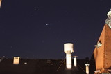
Fig.1: A shooting star I photographed by mere coincidence. A picture like that is rare. 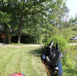Fig.3: Another setup at another location, the telescope. 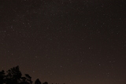Fig.5: Stars 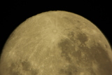Fig.7: Moon I, full, 2011:09:12 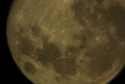Fig.9: Moon III, full, 2011:09:12 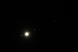Fig.11: Jupiter and Moons, 2011:09:15 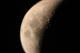Fig.13: Moon I, craters, 2011:10:02 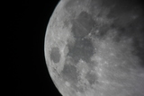Fig.15: Moon, 2012:08:27 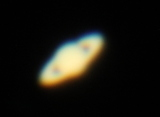Fig.17: Saturn II, 2013:08:01 |
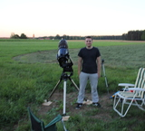
Fig.2: Somewhere out far away from light polution 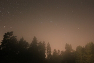Fig.4: Long exposure times with light polution I 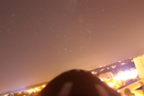Fig.6: Balcony, light polution 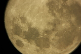Fig.8: Moon II, full, 2011:09:12 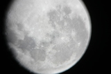Fig.10: Moon IV, full, 2011:09:14 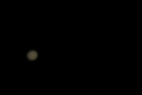Fig.12: Jupiter stripes, 2011:09:15 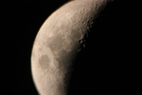Fig.14: Moon II, craters, 2011:10:02 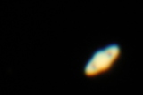Fig.16: Saturn I, 2013:08:01 |
Astronomy: One of the things I was up to in 2010-13What? Some time ago I had an interest in astronomy. I made an effort to take photos of some of the objects in the sky I found particularly interesting. We started with the Moon, then Saturn and Jupiter with some of its Moons. Then we tried photographing galaxies and nebula - some of the Messier objects - but this is where we reached the limitations of our set up. When? This all started around 2011 and by 2013 I had quit most of my efforts. It's very tidious to take these pictures and it involes driving far out, in the night. The best pictures are taken in the winter, so it is also very cold. I don't have access to my friends telescope anymore (Fig.3). Perhaps I will buy a small one for use from my balcony some time. Why? Even though professional photographs taken with gigantic telescopes in fully automated astronomical observatories somewhere in Spain or the desert (joke) - or even in space (Hubble telescope) are of incredible quality - which I will never achieve: It is something else to try this yourself than to look at the pictures. I can say that I've seen Jupiter's moons (Fig. 11) and I, for myself, have verified that five of them do really exist (there are 67 confirmed as of writing this). I don't have to believe solely in the books. Background?
It started shortly after I bought my DSLR (digital single-lens reflex camera). I originally bought this camera to go back to doing video filming and editting. I had been working on several video projects during my school years. Back then I realized that I usually use a mix of short clips and high-resolution pictures in which I can zoom and pan. This makes it more interesting to watch. The higher the resolution the better I can compensate for motion and make smooth pan and tilt effects in the videos. DSLR's can, without modification, record up to 30 minutes of video (this is an annoying limitation which is only due to european law btw - otherwise photo cameras would need to be taxed like camcorders). But serveral clips of 30 minutes length are sufficient. And the better DSLRs can record up to Full-HD and 30fps at a very good price point - this wasn't the case for camcorders back when I bought my DSLR. They also offer lots of options and switching lenses for more interesting shots is possible.
How?
In order to take these kind of photographs one needs a sizable telescope. We were using a Meade LX-10 (8 Inch) (Fig.2). It has auto-guiding in order to correct for the rotation of the earth, but it doesn't have a GoTo-System in order to automatically point it at objects.
Progress? As of writing this I have completly stopped all my efforts in order to persue my studies. It is also due to me not having access to a telescope anymore, but I do wish to revive this one day. A major aspect would be designing my own tools. - i.e. connection of the DSLR to the telescope, building my own view finder, holder for the camera, battery power supply, digital compass and calibration or GoTo-System - in order to save cost and reduce the pain of getting it all set up. |